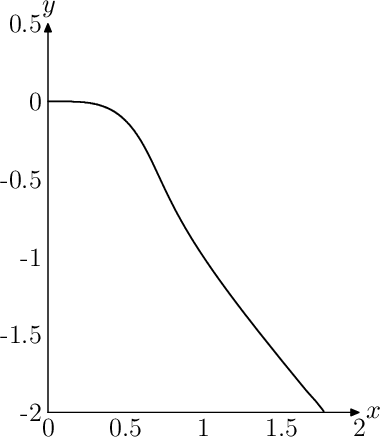

Externalizing Metapost graphics
Posted on October 8, 2018
TikZ has a library external that converts a TikZ picture to a separate PDF.
The TikZ documentation provides three reasons of why external images are
useful:
- Compiling large images takes a lot of time. However, most images do not change from run to run. So, it can save time to export finished images and include them as external figures.
- Sometimes, it is desirable to have separate graphics, for example to include them in third party programs (think XHTML export).
- It may be necessary to typeset a file in an environment where PGF or TikZ are not available.
The third and to a large extent the first point are moot for Metapost+ConTeXt. Metapost is integrated with LuaTeX, so there is no issue of Metapost not being available. Moreover, Metapost is extremely fast so compiling Metapost figures has very little overhead.
There was a recent question on the ConTeXt mailing list by Mikael Sundqvist about plotting an implicit function. He wanted to plot something equivalent to the following Mathematica code
ContourPlot[2 x^5 + x y + y^5 == 0, {x, 0, 2}, {y, -2, 1/2}]
which gives

There is no inbuilt function in Metapost to draw such a curve. Alan Braslau suggested a brute force solution:
\startMPpage[instance=doublefun]
pen savedpen ; savedpen := currentpen ;
pickup pencircle scaled .01 ;
numeric stp ; stp := 1 ;
path p ;
p := for i=0 step stp until 1000 :
for j=0 step stp until 1000 :
hide(x := 2i/1000 ; y := 2.5j/1000 - 2 ;)
if abs(2*(x**5)+x*y+y**5) < .002i/1000 : (x,y) .. fi
endfor
endfor cycle ;
draw subpath (0,length p - 1) of p ;
setbounds currentpicture to (0,-2)--(2,-2)--(2,.5)--(0,.5)--cycle ;
currentpicture := currentpicture xsized 5cm ;
pickup savedpen ;
picture pic ; pic := currentpicture ;
drawarrow llcorner pic--lrcorner pic ;
drawarrow llcorner pic--ulcorner pic ;
label.rt ("$x$", lrcorner pic) ;
label.top("$y$", ulcorner pic) ;
for x=0 step .5 until 2 :
label.bot(decimal x,(x/2)[llcorner pic,lrcorner pic]) ;
endfor ;
for y=0 step .5 until 2.5 :
label.lft(decimal (y-2),(y/2.5)[llcorner pic,ulcorner pic]) ;
endfor ;
\stopMPpage
This code takes about 12sec to compile on my 2012 MacBook Pro and gives the following:
It would be nice to have something like TikZ’s external library here. TikZ’s external library does not work with ConTeXt but as Hans Hagen showed on the mailing list, of course, ConTeXt has an inbuilt solution for this!
Simply wrap the above code in a buffer
\startbuffer[plot]
\startMPpage[instance=doublefun]
...
\stopMPpage
\stopbuffer
and then use:
\typesetbuffer[plot]
Behind the scenes, this writes the content of the buffer to an external file and compiles the file to create an external PDF. On subsequent runs, ConTeXt checks if the contents of the buffer has changed; if not, then the previously compiled file is used.
It is worth highlighting that this trick works with any buffer not just Metapost. So, if you have a complicated TikZ graphic, you can simply use
\startbuffer[TikZplot]
\startTEXpage
\starttikzpicture
....
\stoptikzpicture
\stopTEXpage
\stopbuffer
followed by:
\typesetbuffer[TikZplot]
On a final note, one should keep in mind that the \typesetbuffer macro
simply wraps its content inside \starttext ... \stoptext. Unlike TikZ
external library, the preamble from the original document is not copied. So,
to use the fonts and styles from the original document, one needs to use:
\startbuffer[...]
\environment style
...
\stopbuffer
where I am assuming that the style of the document is set in the style.tex
environment.
This entry was posted in Metapost and tagged externalizing graphics, metapost, efficiency.